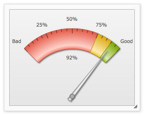
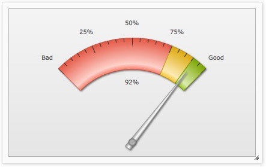
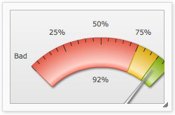
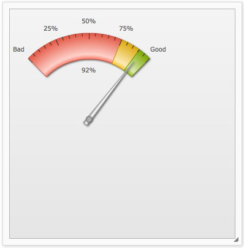
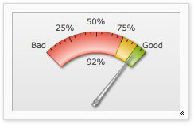
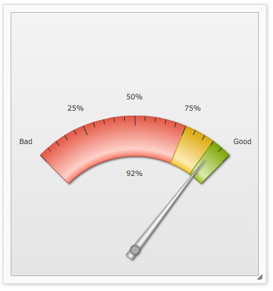

| Dynamic Resizing | ||||
|
Starting FusionWidgets XT, all charts and gauges can resize dynamically when parent containers resize. To enable the dynamic resizing feature, do the following:
These make the gauge capable of re-calculating the space available and adjusting to its new surroundings whenever the dimensions of the parent container changes.
See it live! Please note that while dynamic resizing, the gauge and all its elements are scaled proportionally and works perfectly only for constrained resizing i.e., both width and height of the gauge are resized in proportions. If the chart is not scaled in proportions, the gauge will scale in the least possible proportion and then leave empty space all around it. |
||||
| Dynamic resizing of gauges with manual values specified for various gauge elements | ||||
|
We discussed in previous pages that you can configure the size and positions of various gauge elements with manual values. For example, you can configure gauge radius, dial radius, tick value distance, gauge origin etc. Ideally, you set these values based on a specific width and height of the gauge. We name these dimensions as the original width and the original height of the gauge. By default, a gauge set with manually specified positions and size, when rendered initially, draws itself with all the elements based on the values provided in the XML/JSON. It does not scale its coordinates and other gauge elements. When this gauge is resized, it scales the manually specified values or coordinates based on the dimensions of the initially rendered gauge,that is, the width and height of the gauge when rendered for the first time. Thus, scaling of the various manually configured elements of a gauge will vary in these two scenarios:
Let's see how scaling behaves under the two scenarios and how we can make best of both the scenarios: When a gauge is rendered initially using the original width and original height, and then resized dynamically to different dimensions, the gauge can automatically re-calculate and scale these manual values to fit all the gauge elements to the new size. For example, consider a chart whose original width and height is 260x200 pixels and it uses the following data: |
||||
<chart lowerLimit="0" upperLimit="100" lowerLimitDisplay="Bad" upperLimitDisplay="Good" {
"chart": {
"lowerlimit": "0",
"upperlimit": "100",
"lowerlimitdisplay": "Bad",
"upperlimitdisplay": "Good",
"gaugestartangle": "135",
"gaugeendangle": "45",
"gaugeoriginx": "130",
"gaugeoriginy": "180",
"gaugeouterradius": "140",
"palette": "1",
"numbersuffix": "%",
"tickvaluedistance": "20",
"showvalue": "1",
"majortmheight": "10",
"minortmheight": "5"
},
"colorrange": {
"color": [
{
"minvalue": "0",
"maxvalue": "75",
"code": "FF654F"
},
{
"minvalue": "75",
"maxvalue": "90",
"code": "F6BD0F"
},
{
"minvalue": "90",
"maxvalue": "100",
"code": "8BBA00"
}
]
},
"dials": {
"dial": [
{
"value": "92",
"rearextension": "10",
"valuex": "130",
"valuey": "100"
}
]
},
"styles": {
"definition": [
{
"type": "font",
"name": "myValueFont",
"bgcolor": "F1f1f1",
"bordercolor": "999999"
}
],
"application": [
{
"toobject": "Value",
"styles": "myValueFont"
}
]
}
} |
||||
|
Here, in the gauge's data, we've manually specified the following:
We render this gauge with 100% width and 100% height inside a dynamically resizable container whose initial width is 260 px and initial height is 200 px. The gauge is rendered as shown below:  When the container is resized, the gauge proportionately resizes as shown below:  As you can see above, the chart has resized and scaled the manually specified values of the gauge outer radius (keeping the inner radius percentage same), tick mark height, gauge origin x and origin y, value textbox position and tick value distance. Let us now consider the second scenario: When the dimensions of the initially rendered gauge are NOT same as the original width and original height, two things are noticed:
This scenario is apparent in applications having containers with dynamic dimensions like web parts, panels etc. These containers are not set with fixed dimensions. Rather, they derive their dimensions based on various conditions like available space, number of columns and rows etc. Try this scenario using a live sample from here. The sample shows a gauge whose coordinates and sizes were configured based on the original width as 260 px and original height as 200 px. However, the gauge is rendered in a dynamic container whose dimensions are generated randomly on each page refresh. This may lead to either a cropped gauge or a gauge with lots of extra space as shown in the images below:   Even when you further resize the container, the gauge will not fit into the given space and will always remain this cropped or spaced. To take care of this scenario, you need to pass the original width and height (based on which we had defined the various coordinates/radius) to the gauge. On receiving the original width and height, the gauge always checks the current dimensions against the original width and height then scales everything (that was manually specified) accordingly. We will modify our previous example and provide the original width (260 px) and original height (200 px) through the origW and origH attributes as shown below: <chart ... origW='260' origH='200' ...> { "chart": { ... "origw": "260", "origh": "200", ...}, ...}
When you run the modified sample, you will notice that the gauge now fits proportionately to any given initial dimensions.   See it live! |
||||
|
In a similar way, the annotations present in a gauge can also be scaled and resized dynamically. For more, please see the section Annotations > Dynamic Resizing. |
||||
|
Note for users of FusionWidgets v3.1.1 or earlier:
If you are already using the Auto Scaling feature of FusionWidgets v3.1.1 or earlier (setting autoScale='1' in the <chart> element) to auto-scale charts and gauge, you can continue to use it in FusionWidgets XT without facing any problem. However, we recommend to use manageResize='1' instead of autoScale='1' as manageResize takes care of both auto-scaling and dynamically resizing of the charts and gauges. Please also note that the dynamic resizing feature will not work if you have set autoScale='0'. |